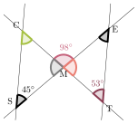
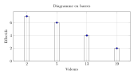

Le triangle $MNO$ est tel que $MO=4~\text{cm}$, $MN=6~\text{cm}$ et $NO=3~\text{cm}$. Ce triangle est-il rectangle ?
Dans le triangle $MNO$, le plus grand côté est $[MN]$. $MN^2=6^2=36$ $MO^2+NO^2=4^2+3^2=16+9=25$ On constate que $MN^2\not=MO^2+NO^2$, l'égalité de Pythagore n'est pas vérifiée. D'après la contraposée du théorème de Pythagore, le triangle $MNO$ n'est pas rectangle.
02
Question
On donne la série statistique suivante : $10$ ; $5$ ; $15$ ; $6$. Quelle valeur faut-il ajouter à la série pour que sa moyenne soit égale à $10$ ?
A. $13$ B. $12$ C. $17$ D. $14$
La somme des valeurs : $10+5+15+6=36$. $\dfrac{36+x}{5}=10$ $ 36+x=50 $ $ x=10\times5-36={\color{#EB7F73}\boldsymbol{14}}$. La bonne réponse est la réponse D.
03
Question
Calculer le volume exact d'une boule de $2~\text{dm}$ de rayon.
a. Déterminer la mesure de l'angle $\widehat{SMC}$. b. En déduire la mesure de l'angle $\widehat{MCS}$. c. Déterminer si les droites $(SC)$ et $(TE)$ sont parallèles. d. Si les segments $[SC]$ et $[TE]$ sont de même longueur, déterminer la nature du quadrilatère $SCET$.

a. Les angles $\widehat{SMC}$ et $\widehat{CME}$ sont supplémentaires, donc $\widehat{SMC}=180°-98°={\color{#EB7F73}\boldsymbol{82°}}$. b. Dans un triangle, la somme des angles vaut $180°$ donc $\widehat{SCM}=180°-45°-82°={\color{#EB7F73}\boldsymbol{53°}}$. c. Les angles $\widehat{SCM}$ et $\widehat{ETM}$ sont des angles alternes-internes. Si des angles alternes-internes sont égaux, les droites sont parallèles. Les droites $(SC)$ et $(TE)$ sont donc parallèles. d. $(SC)\parallel(TE)$ et $SC=TE$ donc $SCET$ est un parallélogramme et $M$ est son centre.
01
Question
Résoudre ce problème, lié à une échelle sur un plan. Le plan du pays de la sœur de Gabrielle a une échelle de $\dfrac{1}{5\,000\,000}$. Gabrielle mesure, sur ce plan, un segment de $3{,}9~\text{cm}$. À quelle distance réelle, ce segment correspond-il ?
Une échelle de $\dfrac{1}{5\,000\,000}$ signifie que $1~\text{cm}$ sur le plan représente $5\,000\,000~\text{cm}$ en réalité, soit $50~\text{km}$. $3{,}9~\text{cm}\times 50~\text{km} = {\color{#EB7F73}\boldsymbol{195~\text{km}}}$.
02
Question
Voici les $5$ notes sur vingt obtenues par un élève en mathématiques :
Devoir
$1$
$2$
$3$
$4$
$5$
Note
$15$
$12$
$14$
$10$
$x$
Coefficient
$1$
$1$
$1$
$1$
$3$
On cherche ce que doit valoir $x$ pour que la moyenne de l'élève soit égale à $15$.
A. Impossible (note $> 20$) B. $x=15$ C. $x=18$ D. $x=16$
Somme $= 15+12+14+10+3x = 51+3x$. Somme des coeff. $= 7$. $\dfrac{51+3x}{7}=15 $ $ 51+3x=105 $ $ 3x=54 $ $ x={\color{#EB7F73}\boldsymbol{18}}$. La bonne réponse est la réponse C.
03
Question
Calculer le volume, arrondi au $\text{m}^3$ près, d'une pyramide de hauteur $5~\text{m}$ et dont la base est un carré de $10~\text{m}$ de côté.
Voici les 3 premiers motifs d'une série de motifs figuratifs. Les motifs se succèdent selon une règle bien définie. Quel sera le nombre d'étoiles dans le motif au rang $n$ en fonction de $n$ ?
Le nombre d'étoiles augmente de $4$ à chaque nouveau motif. La formule est : ${\color{#EB7F73}\boldsymbol{4\times n + 4}}$ où $n$ est le numéro du motif.
05
Question
$\widehat{FBV}$ est un angle :
A. nul B. aigu C. droit D. obtus
$\widehat{FBV}$ est un angle obtus.
Un angle obtus est un angle dont la mesure est supérieure à $90°$.
Réponse D.
01
Question
Déterminer la valeur exacte de $UV$.
On utilise le théorème de Pythagore dans le triangle $TUV$, rectangle en $U$. $UV^2=TV^2-TU^2=6^2-3^2=36-9=27$ $UV={\color{#EB7F73}\boldsymbol{\sqrt{27}}}={\color{#EB7F73}\boldsymbol{3\sqrt{3}}}$ Mentalement : La différence vaut $36-9=27$. La valeur cherchée est donc : $\sqrt{27}=3\sqrt{3}$.
02
Question
Quelle est la médiane de la série statistique étudiée sur ce diagramme en barres ?
A. $5$ B. $7{,}1$ C. $13$ D. $2$

Il y a $19$ valeurs au total. La médiane est la valeur de rang $10$. Les $7$ premières sont $2$, les $13$ suivantes commencent par $5$. La valeur de rang $10$ est ${\color{#EB7F73}\boldsymbol{5}}$. La bonne réponse est la réponse A.
Mesurer la distance entre le point $F$ et la droite $(d)$.
Pour mesurer la distance entre le point $F$ et la droite $(d)$ : - on utilise l'équerre pour tracer la perpendiculaire à $(d)$ qui passe par $F$, - si on nomme $H$ le pied de la perpendiculaire, alors la distance est $FH = {\color{#EB7F73}\boldsymbol{3{,}6}}~\text{cm}$.